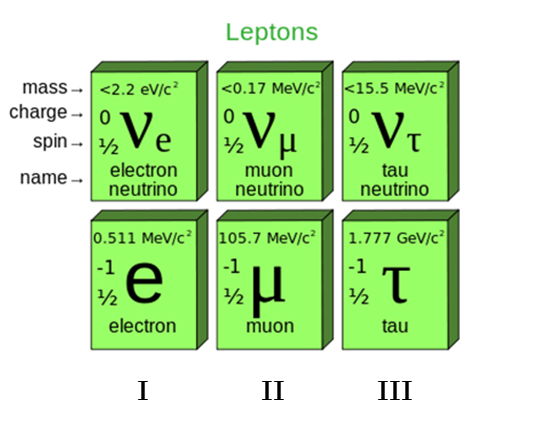
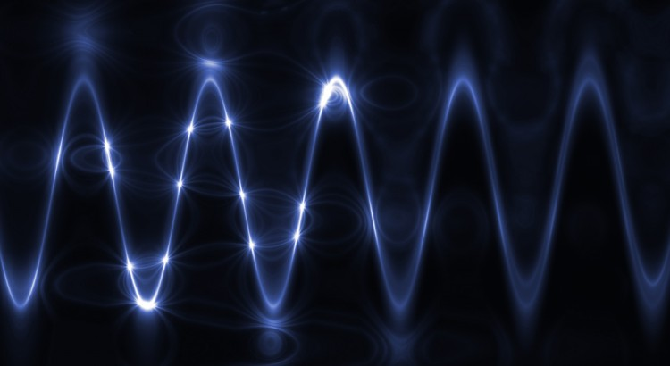
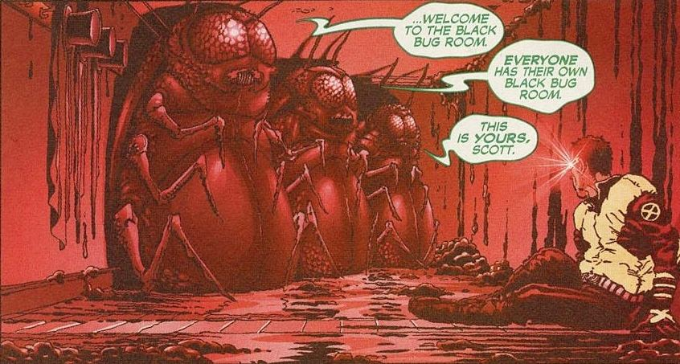
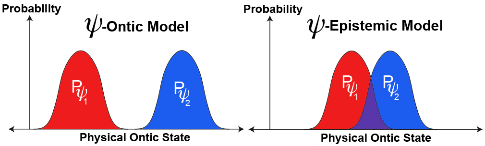

Elsewhere discussed the physical universe, and we discussed the various dimensions of the universe. We discussed how souls are constructed and the quanta that comprise them. For all of these discussions, we really need to discuss what reality is…
Or more interesting, a more central question. Just how does the reality that we see and interact with reflect our mind and thoughts? To answer this question we have to enter a realm of understanding that involves some new terms and some new ways of thinking.
Warning, it tends to get a little bit confusing here. So please hang on.
This post is an introduction to what the true nature of reality is. I discuss it in the most elementary forms and offer pathways for the common reader to consider and ponder. Like the rest of my writings, it is only a signpost to lead to better and more detailed considerations.
Remember, I am only transcribing what I know from my MAJestic involvement. If you want mathematical proofs, you will need to hike over to those who make a living doing that kind of thing.
Introduction
One of the biggest things that I must impart to the reader is that the Quantum world and the “real” world are the same thing. They are not separate realities.
Physics tells us the universe is as it is, and thus able to support life and consciousness. This is because 20 or more physical constants and the laws they dictate take on very specific values. If any of these varied even slightly, we would not be here. Therefore, the precise values and our presence in the universe are apparently a coincidence. It's more than that. It is a stunningly amazing coincidence. It is "mind boggling". To figure out this unbelievable coincidence, scientists have come up with explanations. (I guess that they don't want to even look at "intelligent design" as one of them. Well, they will eventually. It might take a few centuries, but they will.) They have come up with an explanation known as the "anthropic principle". This explanation addresses the question of why these values are what they are, and has several interpretations. The most common is tautological. Which means that we are in this particular universe simply "because". The universe has these specific values simply because it has those values. If it did not, we would not be here. Eh? For many physicists and philosophers, the tautological answer is related to the multiple worldviews, or the MWI. In short, this universe with consciousness is one that resides within a multitude of universes. All the others have different physical constants and lack life and consciousness.
There should be no question or concern that quantum mechanics is our most successful theory of nature. It is not Newtonian mechanics. However, many people just don’t understand it very well. They think that its rules and behaviors are too strange for practical day to day application. Make no mistake, there is absolutely no question that Quantum theory, as well as its key mathematical tool, the wave function, excels at predicting probabilities for the outcomes of experiments.
Yet there is a problem. No one can figure out how it all fits together. The physicists and those “philosophers of science” cannot agree as to how the quantum mechanics influences our “real” world.
Because of this, there has mushroomed a small “cottage industry” of interpretations of quantum theory, and what precisely what it is. Could I be one of the workers in this little industry? What do you think?
Nah.
This is my feeble attempt to describe our true absolute reality. It is my attempt to show how the physical world that we observe is but a myopic view of the true reality. It is my attempt to show that our universe is fashioned as such by the limitations of our physical body.
We define what our Universe Is
Forget about thought for now. Let’s just consider the “physical” world that surrounds us…
So, what is the fine structure of the universe?
- The material world is composed of atoms and subatomic particles.
- But atoms (-10-8 cm) are mostly empty space.
- Well, not exactly “empty” (When I first penned this, that was what I thought. However, my opinion has since changed drastically. There is nothing as “empty space”, it is all filled with “something”. Space and time are mental illusions that we have created to help us understand things.), as is the space between atoms.
- If we go down in scale from atoms, eventually we reach the basement level of reality, Planck scale geometry at 10-33 cm, with coarseness, irregularity, and information.
OK. So here we are. We are at the bottom of the very basic physical reality. We call it “Planck-scale geometry”.
Descriptions of Planck scale geometry include such things as;
- String theory.
- Loop quantum gravity.
We don’t really know what the best theory is for things so absolutely tiny. We can only suppose theories.
String theory, is a pretty valid theory. I guess. Here, Planck scale strings vibrate at specific frequencies. Each frequency correlates with fundamental particles. It’s a pretty decent theory as far as theories go. But it does has some problems. It lacks background geometry (Where and in what environment do the strings vibrate?) and it also requires multiple untestable dimensions. Ouch!
Or, perhaps…
Loop quantum gravity depicts space-time geometry as quantized into “volume pixels”. These volume pixels are Planck scale polygons with edges that have special properties. The edges may be considered as irreducible spin whose lengths vary (but tend to average 10-33 cm). Planck volumes evolve and change with time, conveying information as a 3-dimensional spider web of spin. Experiments suggest that space-time geometry is also non-local, and maybe holographic.
By studying what is going on at the tiniest levels of our observed reality, we can get some understanding of our universe. As long as we can settle upon a theory that works well enough.
Recent evidence suggests that Planck scale information may repeat at increasing scales in space-time geometry, reaching to the scale of biological systems. Or, in other words, “as above, so below“. It’s sort of like a Mandelbrot illustration.
We tend to believe in this behavior of scale due to observations in test environments. For instance, the British-German GEO 600 gravity wave detector near Hanover, Germany has consistently recorded fractal-like noise which apparently emanates from Planck scale fluctuations. These fluctuations repeat every few orders of magnitude in size and frequency. They go from Planck length and time (10-33 cm; 10-43 s) to bio-molecular size and time (10-8 cm; 10-2 s).
At some point (or actually at some complex edge, or surface) in this hierarchy of scale, the microscopic quantum world transitions to the classical Newtonian world. It transitions cleanly and absolutely.
If this transition is due to some kind of Penrose-related theory, and there is no reason to consider that it might not, then it is reasonable to consider that consciousness occurs as a process on this edge between quantum and classical worlds.
The Penrose-Hameroff theory of "orchestrated objective reduction" ("Orch OR") proposes that consciousness depends on quantum computations in structures called microtubules inside brain neurons, occurring concomitantly with and supporting neuronal-level synaptic computation (Penrose and Hameroff 1995; Hameroff and Penrose 1996a,b; Hameroff 1998a,b; Hameroff et al. 2002). After all, everything that is being discussed is related to perceptions…
Consciousness occurs at the transition point between quantum and classical Newtonian science.
Which points out some very significant considerations;
- Depending on the scale of consideration, we have a threshold of consciousness.
- Consciousness cannot exist below that threshold.
- Consciousness generates thoughts.
- Below the consciousness threshold is a universe that is independent of thought.
- Above the consciousness threshold we have a reality that is ruled by thought.
Finally,
- We exist within two universes simultaneously.
- One universe is ruled by thought and the other is not.
“Land us over there, will you. Captain; that looks like rich country if I ever saw it." It was the freshest green color they had seen since childhood. Lakes lay like clear blue water droplets through the soft hills; there were no loud highways, signboards or cities. It's a sea of green golf links, thought Forester, which goes on forever. Putting greens, driving greens, you could walk ten thousand miles in any direction and never finish your game. A Sunday planet a croquet-lawn world, where,you could lie on your back, clover in your lips, eyes half shut, smiling at the sky, smelling the grass, drowse through an eternal Sabbath, rousing only on occasion to turn the Sunday paper or crack the red-striped wooden ball through the wicket. "It ever a planet was a woman, this one is…" -Ray Bradbury. Here There Be Tygers
The Terrible Mess
“Anyone who considers protocol unimportant has never dealt with a cat.” -Robert Heinlein in “The Cat Who Walks Through Walls.”
To begin, we all must recognize that everything in the observed universe is made up of either [1] physical matter, [2] energy, or [3] “dark” matter. All of these three forms can be broken down into the smallest elements known to man. (No, not atoms. Smaller. Think vibrating “strings” or as we just discussed, Loop quantum gravity.)
At these small sizes they exhibit quantum behavior. (That is to say that they can behave like a particle or like a wave depending on the observer. They are so, so, so very tiny, that thought influences their very form.)
Ponder that one for a second... The small size of quanta is influenced by thought. If so, how? Could it be that thought, is in itself a "thing"; a thing that is larger than these small tiny-sized quanta.

Thus, to understand the nature of our universe, we must look at these tiny elements; these tiny waves and see how they behave.
As much as we think we know, we are constantly being reminded that what we do know is very small. We don’t yet know about the nature of the universe, and how everything fits together. We are constantly reminded of that point and that fact. For instance, consider the details of the study published in the journal Nature .
In short, the three experiments reviewed in the studies involved [1] charged leptons, (which are electrons), [2] muons, and the [3] heavier taus.

The experiments revealed that taus actually decay faster than the standard model predicts.
The surprising thing was the data which came from the LHCb experiment at CERN in Switzerland, the BaBaR detector of the SLAC National Accelerator Laboratory in California, and the Belle experiment in Japan challenged lepton universality at four standard deviations. This means that there’s a 99.95 percent certainty that this data is accurate, according to the USCB team.
Initial reading into these results would seem to indicate that there is indeed a deviation from the Standard Model of particle physics.
This could mean that an entirely different model of physics is needed to explain the peculiar behavior of the tau particle. In other words, new physics is required.
I urge the reader never to consider that we know “all that there is to know”, simply because of the latest trends in technology. Until we, as a species are able to troll about the multi-worlds in our own world-lines we will be imprisoned within our own bubbles of ignorance.
The Wave Function

At the center of this “wavy” quagmire is the “wave function.”
A measure of our ability to determine how and why these tiny strings change shape with thought is through the “wave function”.
Using the wave function, better known by its mathematical nickname, ψ (“psi”), physicists can calculate the probability that a quantum measurement will have a particular outcome. (It is all probability. The highest probabilities determine the given dimension that we reside in at any given moment.) That therein lies the strength of quantum physics, as well as the apparent strangeness of it.
This ψ is a measure of how thought alters our reality.
This ψ is a measure of how thought alters our reality.
The success of this procedure has allowed us to control the subatomic world with unprecedented precision. From it we have developed the entire microelectronics revolution. All electronics from iPhones to televisions rely upon the principles of quantum mechanics. Yet, this success is not really well understood.
Humans want discrete and solid answers. They want a classical physics answer. But quantum mechanics can’t deliver a single, definite answer to a simple question about the outcome of a measurements. Instead, it returns a “probability distribution curve” representing many different possible outcomes.
It’s only after you make a measurement that you observe a stable, predictable, classical outcome. At this point, the wave function is said to have “collapsed.”
To some, this suggests that there is a gap between the real, physical universe and whatever it is that the wave function is describing. If so, then what does the wave function actually represent? And what, if anything, is actually collapsing? It appears confusing, if not absolutely crazy. (But that is simply a matter of perception that is colored by the limitations of our human senses. We cannot “see” the multidimensional aspects of reality, so quantum laws appear to be nonsensical.)
I would like to provide some insight to this devilishly complex condition. As it is critically important to understanding everything that I have written in this blog.
The missing piece – thought
What is the missing piece? Why is there a gap between how the quantum universe works and the physical world works? The answer it seems is quite simple, but we refuse to believe it.
What it is; it is thought.
Humans are confused because we insist that thought has no tangible form. It is just effervescent “nothing”. That is wrong. Thought is a quantum reality; it is missing factor in the behavior of physical items in the physical universe. The ability for our soul and it’s physical body to construct thoughts is the key to manipulation of the quantum world and thus the physical reality that surrounds us.
Perhaps it is our way of looking at this problem that causes such problematic confusion.

An ψ – Ontic Existence
Philosophers use the word “ontic” to describe real objects and events in the universe, things that exist regardless of whether anyone observes them. If you don’t see them, if you don’t think about them, they still exist. They would exist whether you were alive or not.
If you think of the universe as a video game, the so-called “ψ-ontic” view holds that the wave function is the source code.
From this perspective, the wave function does indeed correspond directly to physical reality, containing a complete description of what philosophers call “the furniture of the world.”
For these “ψ-ontologists” (as their opponents playfully call them), quantum theory, and reality itself, is ultimately about how the wave function unfolds over time, according to the Schrödinger Equation.
In the quantum realist view, ψ is, in some sense, “all there is.”
To many thinkers in this camp, nothing extraordinary happens at the moment the wave function collapses. The apparently instantaneous collapse is actually just a very rapid process that occurs as a formerly-isolated quantum system interacts with its surrounding environment.
But…
But, please consider however, the strange idea that the collapse is something else entirely. Instead of a wave function collapse within your dimension, it is something else. Consider the idea and concept that a collapse occurs when you change from one dimension to another dimension.
Perhaps it is actually a transference of dimensional states that your soul resides in. Not a fixed dimensional state where you observe a collapse occurring.
Oh wow!
An ψ – Epistemic Existence
By contrast, the alternative “ψ-epistemic” view holds that the wave function represents something quite different. At most it provides us with a limited knowledge of the state of the system. It does not provide the source code.
However, if you study this function in detail, you might be able to learn about the source code.
Some ψ-epistemologists believe an actual ontic state still exists. This is true even if the wave function is just a “convenient computational tool” that doesn’t capture all of the underlying reality.
Others in the ψ-epistemic camp contend that the physical ontic state may not even exist without an observer present. They argue that the game doesn’t exist if there’s no one there to play it.
What our physical reality is…
Of these two belief structures, the one that I am most familiar with is the more “realist” position. This position holds that there is a real, physical, world that exists independent of the observer. This is true, regardless of whether or not the wave function captures the whole story.
I do not know if it is the actual and true nature of reality; I only know that this the one position that seems to agree with what I have observed and experienced first-hand.
It is also the one that I am most comfortable with, and the one that seems to be in the best agreement with (what I know) known MAJestic understandings. (This is not because of what the reader might think. No. Instead it is because our thoughts are constantly shifting in and out of the multi-dimensional universe.)

I ask the reader to recall, that I earlier described that our universe consists of two different universe states. One is controlled by consciousness and the thoughts by consciousness. The other is not.
For the record; it is the ψ -epistemic view that best describes the physical reality that we observe within our customized reality.
The ψ -epistemic view describes our observed reality.
It is the ψ -ontic view that holds the absolute framework by which all of the multi-verse universes exist within. We are trapped within a ψ -epistemic custom reality where it appears that everything is fixed. But that is illusionary. It is fixed because the world-line for each soul is custom to meet the learning and educational demands of the soul.
The ψ -ontic view describes our true universe.
How it works
The soul controls all. The soul controls everything. It creates time. It creates space. It forges a world-line for each soul to conduct specific learning exercises. As such, it makes absolute sense that it be ψ-ontic in nature.
However the reality of all; that of Heaven and the location where souls dwell is ψ- ontic. The reality that is created for us by our soul is ψ –epistemic.
In this view, wave function collapse is not an actual physical process.
Instead, it represents the near-instantaneous “updating of our knowledge” about the state of the system. This seems to give the observer some kind of special status, one in which the thoughts of the observer controls everything. This may or may not be desirable, depending on your perspective.
Schrödinger’s cat In this view, uncomfortable quantum super-positions, are just mathematical tools. They are mirages. They are the sums of potential possibilities, not actualities. Nothing matters what might be. All that matters is what actually is. It is all determined by observation. Nothing else matters.
Putting it together.
According to what I understand; theoretical work by the British physicists Matthew Pusey, Jonathan Barrett, and Terry Rudolph (PBR) has presented the strongest theoretical evidence (I know of) in favor of the ψ-epistemic view for the universe as created individually for a specific soul.
They have proven a contradictory view by the ψ-ontic belief camp. Indeed the ψ-ontic view contradicts the predictions of quantum mechanics.
This seems to suggest that the wave function really does correspond to an objective physical reality. As such, the ψ-ontic team is out of luck in terms of the specific physical universe. However, the reader need be reminded that Heaven and souls occupy a dimensional reality that is beyond that of the ψ-epistemic structure out of necessity. Heaven is ψ-ontic. (This would make a great tee-shirt don’t you think? “Heaven is ψ-ontic.”)
Heaven is ψ-ontic.
Test Confirmations in the Laboratory
In 2014, a team of experimental physicists conducted a very, very special experiment. Their leader, Martin Ringbauer, working with Professor Andrew White at the University of Queensland, performed a very special experiment to test the reality of this issue of ours.
This experiment was designed to test whether the ψ-ontic or ψ-epistemic picture gives is the best explanation for our observed reality. They argued that certain quantum experiments, could help determine this. Obviously the purpose was to identify whether the true nature of reality was either ψ-ontic or ψ-epistemic.
The key issue is that certain quantum states called “orthogonal” are relatively easy to distinguish experimentally.
It’s a classic procedure. Set up a simple test and measure it exactingly. Consider, for example a photon with “horizontal” polarization versus another with “vertical” polarization. Other “non-orthogonal” quantum states, like two different combinations of both horizontal and vertical polarization, cannot be distinguished perfectly, even if the experimenter knows what the possibilities are in advance.
The ψ-ontic and ψ-epistemic views tell very different stories about why non-orthogonal quantum states are so hard to tell apart in the lab.
- In the ψ-ontic view, the quantum state is uniquely determined by the ontic state.
- In the ψ-epistemic view, more than one quantum wave function can represent the same ontic reality.
This sounds complicated, but it needn’t be.
We can show this visually using a graph like the one below. Assuming that there really is some underlying “reality”, the ψ-ontic model says that the wave functions of two independent states can’t overlap. But in the ψ-epistemic model, on the right, two different wave functions can correspond to the same ontic state, represented by the purple area where the curves of the wave functions do overlap.

Ontic models vs. Epistemic models.Now, imagine that, instead of overlapping two-dimensional curves, we had overlapping three-dimensional spheres, or even more. ..
Ringbauer and his colleagues tested this out by measuring several states of specially-prepared photons, each with either three or four parameters. Adding a new quantum state is like adding an extra sphere to the set. When adding more spheres, and/or increasing the number of dimensions, it becomes even harder to find places where all the spheres overlap.
With this analogy in mind, the Queensland group found that as they increased the number of parameters (for each quantum state) and increased the number of states (they were trying to distinguish between), their experimental results increasingly diverged. The more they added complications, the more they diverged from the predictions of a well defined ψ-epistemic model.
Their experimental results thus strongly conflict with the ψ-epistemic picture’s “overlap” model. This is considered a serious blow against the ψ-epistemic viewpoint.
My Understanding of Reality
In the quest to understand the true Nature of Reality, we must continually question our most basic assumptions. We need to admit and quantify our ignorance. I also need to be explicit about what we are assuming.
Do not shoot the messenger. I do not have the answers. My role was not to understand anything. And, my dear reader, I could very well be completely wrong about everything.
- Have you ever attended a wedding where, though you weren’t the one exchanging vows with your beloved, you still felt your own commitment to your wife renewed? Have you ever been reading a book, and come upon an insight that was so profound your jaw literally dropped, and you spent the next couple minutes staring off in the distance, absorbing its significance?
- Have you ever been at a church service where the pastor was speaking to the congregation’s unconverted, and while you already believed, you felt your heart greatly stirred?
- Have you ever watched a play, and left the theater with a head full of questions not only about the plot, but about its intersection with your own life?
- Have you ever had a friend share an experience that, though they didn’t know it at the time, helped you figure out what decision to make with an issue you were personally struggling with?
In all of these situations, you were privy to a message or an experience that wasn’t explicitly directed to you. You overheard it. Well, welcome to my life. I don’t have all the answers, I only know what I participated in, and I have tried to translate into a language that is at best, inadequate to do so.
Conclusions
The universe consists of two universes. One that that are consciously aware of, and one that we are not.
The part that we are not aware of is often considered to be “Heaven”, when it is in reality as place or gateway to multiple “Heavenly realms”. The part that we are aware of is the reality that our consciousness inhabits.
The soul creates a consciousness that connects to a specific reality. That consciousness generates thoughts and alters that reality to fit the needs of the soul.
Take Aways
- Depending on the scale of consideration, we have a threshold of consciousness.
- Consciousness can not exist below that threshold.
- Consciousness generates thoughts.
- Below the consciousness threshold is a universe that is independent of thought.
- Above the consciousness threshold we have a reality that is ruled by thought.
Finally,
- We exist within two (x2) universes simultaneously.
- One universe is ruled by thought and the other is not.
Additionally,
- The ψ is a measure of how thought alters our reality.
- Heaven is ψ-ontic.
- Our reality is ψ -epistemic.
- Tests seem to confirm this.
FAQ
Q: Does the quantum wave function represent reality?
A: No. It only serves as a mathematical method from which we can calculate the given probability of an outcome. The interpretation of what is observed by the wave function determines the relative state of ψ.
Q: Is it possible to have a MWI where everything fits within a ψ -epistemic reality?
A: No. Any given reality is naturally ψ -epistemic, but all the alternative realities of the MWI are all encoded within a ψ-ontic state.
Q: How does consciousness control the MWI?
A: Consciousness creates a collapse of the wave function at the point in time whereas the (a) ψ -epistemic state is realized. This can occur with technology, or through mental discipline, or by “piggy-backing” on to other consciousnesses that have the ability to collapse a wave form at will.
MAJestic Related Posts – Training
These are posts and articles that revolve around how I was recruited for MAJestic and my training. Also discussed is the nature of secret programs. I really do not know why the organization was kept so secret. It really wasn’t because of any kind of military concern, and the technologies were way too involved for any kind of information transfer. The only conclusion that I can come to is that we were obligated to maintain secrecy at the behalf of our extraterrestrial benefactors.


MAJestic Related Posts – Our Universe
These particular posts are concerned about the universe that we are all part of. Being entangled as I was, and involved in the crazy things that I was, I was given some insight. This insight wasn’t anything super special. Rather it offered me perception along with advantage. Here, I try to impart some of that knowledge through discussion.
Enjoy.


MAJestic Related Posts – World-Line Travel
These posts are related to “reality slides”. Other more common terms are “world-line travel”, or the MWI. What people fail to grasp is that when a person has the ability to slide into a different reality (pass into a different world-line), they are able to “touch” Heaven to some extent. Here are posts that cover this topic.


John Titor Related Posts
Another person, collectively known by the identity of “John Titor” claimed to utilize world-line (MWI egress) travel to collect artifacts from the past. He is an interesting subject to discuss. Here we have multiple posts in this regard.
They are;